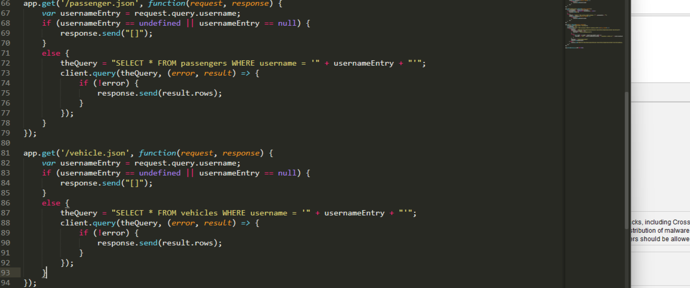

The product I was hired to assess is a ride-hailing service. I will be analyzing the server-side source code of the product, as well as any packages included in the product in package.json.
I am using OWASP ZAP to do a vulnerability scan, then using an 'ocular patdown' method on the rest of the code.
I found 6 vulnerabilities using the OWASP ZAP Vulnerability scan. They are as follows:
Most of these vulnerabilities have to do with an overall risk of injections that can be prevented following cybersecurity best practices.
Issue: Risk of SQL Injection
Location: server-vuln.js
Severity of issue: High risk, potentially fatal
Description of issue: Database is vulnerable to SQL injection on GET requests to '/passenger.json' and '/vehicle.json'.
Solution: Validate input to GET requests handling in the server-side code for '/passenger.json' and '/vehicle.json' so that SQL Injection is no longer possible.
Issue: Content Security Policy Header Not Set
Location: server-vuln.js
Severity of issue: High
Description of issue: Content Security Policy (CSP) is an added layer of security that helps to detect and mitigate certain types of attacks, including Cross Site Scripting (XSS) and data injection attacks. These attacks are used for everything from data theft to site defacement or distribution of malware. CSP provides a set of standard HTTP headers that allow website owners to declare approved sources of content that browsers should be allowed to load on that page — covered types are JavaScript, CSS, HTML frames, fonts, images and embeddable objects such as Java applets, ActiveX, audio and video files.
Solution: Ensure that your web server, application server, load balancer, etc. is configured to set the Content-Security-Policy header, to achieve optimal browser support: "Content-Security-Policy" for Chrome 25+, Firefox 23+ and Safari 7+, "X-Content-Security-Policy" for Firefox 4.0+ and Internet Explorer 10+, and "X-WebKit-CSP" for Chrome 14+ and Safari 6+.
Missing Anti-Clickjacking Header
Location: server-vuln.js
Severity of issue: Medium
Description of issue: The response does not include either Content-Security-Policy with 'frame-ancestors' directive or X-Frame-Options to protect against 'ClickJacking' attacks.
Solution: Modern Web browsers support the Content-Security-Policy and X-Frame-Options HTTP headers. Ensure one of them is set on all web pages returned by your site/app. If you expect the page to be framed only by pages on your server (e.g. it's part of a FRAMESET) then you'll want to use SAMEORIGIN, otherwise if you never expect the page to be framed, you should use DENY. Alternatively consider implementing Content Security Policy's "frame-ancestors" directive.
Server leaks Version Information via "Server" HTTP Response Header Field
Location: server-vuln.js
Severity of issue: Low
Description of issue: The web/application server is leaking version information via the "Server" HTTP response header. Access to such information may facilitate attackers identifying other vulnerabilities your web/application server is subject to.
Solution: Ensure that your web server, application server, load balancer, etc. is configured to suppress the "Server" header or provide generic details.
X-Content-Type-Options Header Missing
Location: server-vuln.js
Severity of issue: Low
Description of issue: The Anti-MIME-Sniffing header X-Content-Type-Options was not set to 'nosniff'. This allows older versions of Internet Explorer and Chrome to perform MIME-sniffing on the response body, potentially causing the response body to be interpreted and displayed as a content type other than the declared content type. Current (early 2014) and legacy versions of Firefox will use the declared content type (if one is set), rather than performing MIME-sniffing.
Ensure that the application/web server sets the Content-Type header appropriately, and that it sets the X-Content-Type-Options header to 'nosniff' for all web pages. If possible, ensure that the end user uses a standards-compliant and modern web browser that does not perform MIME-sniffing at all, or that can be directed by the web application/web server to not perform MIME-sniffing.
Most vulnerabilities to this page can be rectified with a straightforward solution. Once the SQL injection alert is dealt with, there are only a few lower-priority issues to fix involving the Content-Security-Policy and X-Frame-Options HTTP Headers.